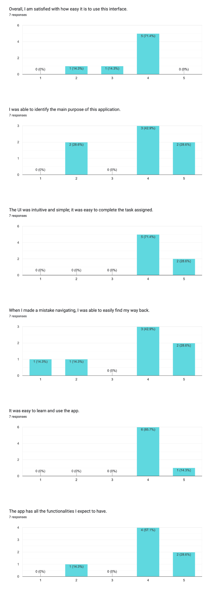

We have conducted usability testing with 7 individuals. Below is the result of the questionnaire.

What did we learn from testing our app with our target users?
What were the areas of strength/potential?
aesthetic and where things were placed
Graphics are good
hey saw how functionality is quite good
they found that the layout of the posts and the implementation of the post was nice
A person using the app was confused what “Hawa” was at first but after knowing it is her (user) profile she just clicked it and it was there. She was on the “happy path” and did not have an issue on this task. She said it’s really clear.
Overall, they liked the idea of the swiping functions
What were the areas of weakness/limitations?
Users couldn't conceptualize the purpose of our app, which is to explore and find new communities
Users struggled to understand how the swipe feature works
Users discovered some breaks in our prototype
Setting the user to "HAWA" confused users.
Users wanted an easier way to search for new communities